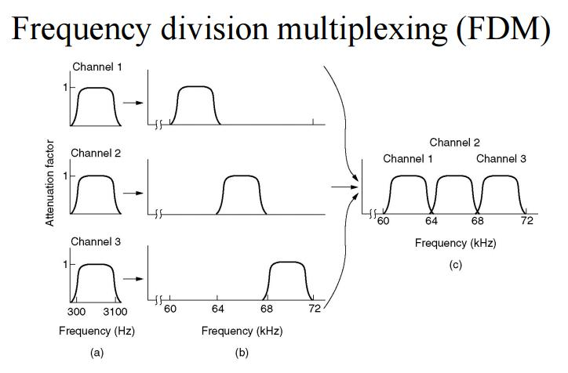
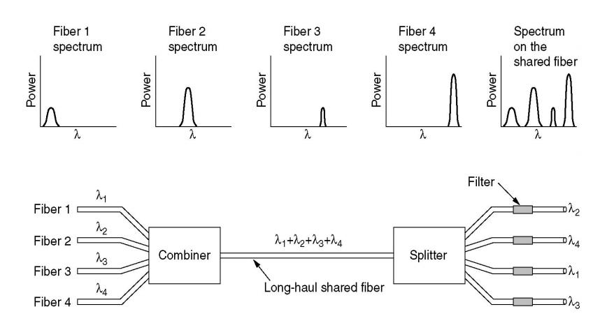
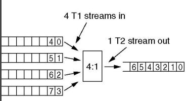

Lecture 5 - Notes
January 18, 2016
Physical Layer Internet Backbone
Internet access
- Phone Line
- Cable Line
- Ethernet
- Wireless
Switching Technologies
- Circuit Switched: Each message requests a transmission line, when granted it transmits on an assigned line.
- Message Switched: Messages are sent sequentially on separate lines.
- Packet Switching: Packets are sent on separate lines and decoded at the end.
Multiplexing
- A way of sending multiple signals or streams of information over communications link at the same time.
Frequency-Division Multiplexing (FDM)
- The total available bandwith in a channel is divided into no overlapping sub channels each of which is used to carry a separate signal
- Typically used for radio

- Example: Suppose a long-distance cable is available with a bandwidth allotment of three megahertz (3 MHz). This is 3,000 kHz, so in theory, it is possible to place 1,000 signals, each 3 kHz wide, into the long-distance channel. The circuit that does this is known as a multiplexer. It accepts the input from each individual end user, and generates a signal on a different frequency for each of the inputs. source
Wavelength Division Multiplexing (WDM)
- Multiplexing is done by using different wavelengths (colors) of light as the sub channels.

- WDM is multiplexing for optical channels
Time-Division Multiplexing (TDM)
- Synchronized switches at each end of the transmission line multiplex and demultiplex the streams of data so that each signal appears on the line only a fraction of time in an alternating pattern.

- In the image, when 4 streams are multiplexed using TDM the bits from any particular stream are spaced apart at interval of 4. So bits at
4*i(iis an integer), Come from stream 1 and4*i + 1come from stream 2 and so on.
Internet Backbone
- TO DO